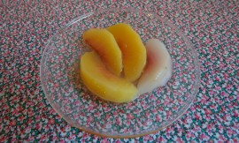

먹는 이야기
얼마 전 근처 가게에서 호기심에 샀던 흰색 가지를 구워 간장 양념을 곁들여 먹었다. 아티초크는 아직 못 먹고 냉장고의 작은 비닐 안에서 미라처럼 말라가고 있고, 까놓은 마늘을 넣은 유리병은 아직도 뚜껑을 못 찾고 먼지를 먹으며 식탁 위에 있다.April 17, 2012 /


Sundays are mine
Is it just me, or are the weeks getting shorter? This year has been a confusing one, also seems like passing by ever more quickly. I’ve been trying to leave Sundays for myself, but sometimes it’s not that simple. I blame some of that on a recent stressful work at School. Here’s a [...]November 21, 2011 /
Sundays are mine
Is it just me, or are the weeks getting shorter? This year has been a confusing one, also seems like passing by ever more quickly. I’ve been trying to leave Sundays for myself, but sometimes it’s not that simple. I blame some of that on a recent stressful work at School. Here’s a [...]November 21, 2011 /

What we ate last week, with curious Moony
Sometimes I wonder if my cat sees me as a cat, and I also suppose he might think me as a mother cat. Some people say that cats think they are human, but nobody knows exactly what this cat creature thinks. Roon once said that cats must be aliens. Moony always [...]October 27, 2011 /
What we ate last week, with curious Moony
Sometimes I wonder if my cat sees me as a cat, and I also suppose he might think me as a mother cat. Some people say that cats think they are human, but nobody knows exactly what this cat creature thinks. Roon once said that cats must be aliens. Moony always [...]October 27, 2011 /
It’s all reading and exhausting, recently.
And, of course, I’m not complaining about it.Here are some excerpts from the recent reading. Illich notes that today people ‘surrender themselves to atrocious debaucheries of images and representations in order not to see.’ In an age that denies death and deforms reality, simple acts of kindness, personal relations bound [...]September 18, 2011 /
It’s all reading and exhausting, recently.
And, of course, I’m not complaining about it.Here are some excerpts from the recent reading. Illich notes that today people ‘surrender themselves to atrocious debaucheries of images and representations in order not to see.’ In an age that denies death and deforms reality, simple acts of kindness, personal relations bound [...]September 18, 2011 /
추석 흉내
아직 지난 여름 방학의 생활 습관에서 빠져나오지 못 한 채 가을 학기의 첫주를 보내고 읽어야 할 책 리스트에 여섯 권 정도를 또 추가하고 나니 주말이 되었다. 그렇지 않아도 달팽이 기어가는 속도로 느리게 책을 읽는 나를 학교가 이렇게 함부로 대접해도 되는지에 대해 곰곰이 생각해보다가 다가오는 추석에 송편을 만들어 먹겠다던 내 철없는 [...]September 11, 2011 /
Last minute summer
My luxurious, relaxed, calm summer break is near to the end. Well, it is time to go back to the life of a grad-student that there is always too much to do, and not enough time to do it.September 4, 2011 /
Last minute summer
My luxurious, relaxed, calm summer break is near to the end. Well, it is time to go back to the life of a grad-student that there is always too much to do, and not enough time to do it.September 4, 2011 /

딱딱한 복숭아 구조대작전/Canning peaches
Hurricane Irene did her thing yesterday night and today morning, fortunately the damage wasn’t bad as initially predicted. Me and my husband(and our cat) trapped inside our home, we did our laundry, floor mopping, dish washing and cooking. When we finished cleaning, we watched a disaster movie.August 28, 2011 /
딱딱한 복숭아 구조대작전/Canning peaches
Hurricane Irene did her thing yesterday night and today morning, fortunately the damage wasn’t bad as initially predicted. Me and my husband(and our cat) trapped inside our home, we did our laundry, floor mopping, dish washing and cooking. When we finished cleaning, we watched a disaster movie.August 28, 2011 /